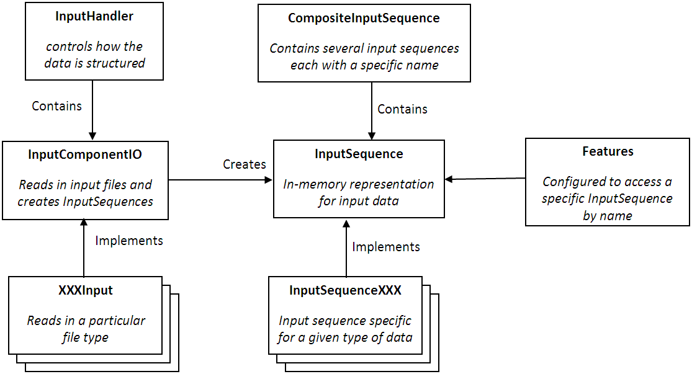

One of the key advantages of using Conrad for gene calling or other CRF problems is its ability to quickly and easy create a predictor by combining together different sets of features. Conrad has a very powerful I/O mechanism to handle this interaction, but in order to take advantage of this power you must understand how the I/O works. The following picture describes how the various I/O classes work together:

The simplest place to start is to understand how the input data is presented to the features in the model. For more information on the features themselves, see the features section of the documentation. We will begin by covering the evaluation process and then cover training.
When input data is read in, it is read in to a list of InputSequence objects. Each element in the list corresponds to a separate sequence of hidden states. Each one of these InputSequence objects contains the observations for a single sequence. There are several different types of InputSequence objects that correspond to different types of data. An InputSequenceCharacter is an sequence which is a text string, an InputSequenceBoolean contains a single boolean value at each position, etc. There is also an InputSequenceComposite which corresponds to an input sequence that contains multiple data types. In most non-trival prediction problems, the input sequence will be a composite. Users are even free to define their own types of InputSequence. We do this for gene calling to provide special processing for multiple alignments. Any object that implements the InputSequence interface can be used.
An InputSequenceComposite is just a collection of InputSequence objects along with a name assigned to each one. In the comparative.xml model, the input sequence contains several components:
When performing training, the hidden states are required in addition to the input sequences. Training data is represented using a TrainingSequence object. A TrainingSequence sequence contains an InputSequence along with an array of integers contianing the hidden state for each position.
One of the major goals of Conrad is to make it easy to write individual features and then combine them in different models. Because different models may use different input data, we don't want to have to make the feature dependent on the structure of the input data. So Conrad contains configuration that allows an individual feature in a particular model to be associated with a particular component of the input. Each FeatureManager contains an inputComponent property that defines which component of the input sequence it should receive. All calls to training and inference functions will then pass only that component to the FeatureManager. As an example, the PWMInterval13 feature is written to use only the genome sequence to compute it's feature values. As the genome sequence is a text string, this feature expects to receive an InputSequenceCharacter object as it's input. When placed in a realistic model that contains multiple sources of input data such as the comparative.xml model, the PWMInterval13 can be configured to only receive the genome sequence as input by assigning it's inputComponent as ref. It will never see or have access to the other input data such as the comparative alignments. This makes it easy to combine different features and input data together.
Similarly, Conrad ensures that this separation into components occurs for both evaluation and training. During the training process, the feature will be handed a series of TrainingSequence objects where each training sequence contains the series of hidden states associated with the specific component of the input data desired by the feature.
Now that we understand how the data is represented internally and presented to the engine, we can look at how a set of input data files is configured to read in and create the list of InputSequence and TrainingSequence objects. There are two major pieces to this, the InputHandler and the InputComponentIO.
There is only one InputHandler, and it is the object that the Conrad engine actually looks up by name in the model file. This object controls how the data location passed to the Conrad engine will be interpreted. The most common input handler is the InputHandlerDirectory, which assumes that the location which is passed in is a directory and that directory will contain a consistently named set of files and each file will contain one type of data for all of the input sequences. If you have a different input format, such as having a single file per input sequence, you can use a different input handler to accomodate that. In this section we will only describe the operation of the InputHandlerDirectory.
The InputHandlerDirectory is configured with a set of files, and each file has an associated InputComponentIO which is responsible for reading in that file and populating one or more components of the InputSequenceComposite. Each InputComponentIO can be specific to a given file format. In Conrad, we use a different one for each file format we use: FastaInput, FastaAlignmentInput, MultipleAlignmentInput, and GTFInputInterval13. For reading in training sequences, there is a TrainingSequenceIO object which is analagous to the InputComponentIO but reads in the array of hidden states.
In developing Conrad we used many different data configurations, features, and data types. In the end we found that the most efficient system was to separate how the data was represented internally (InputSequences) from how individual data files were read in (InputComponentIO) and from how the overall set of data is configured (InputComponentIO). The resulting system is flexible and allows a high amount of reuse. By decoupling these things, it is possible for the same feature function to be easily used on a DNA sequence read out of a FASTA file containing other sequences or embedded in a Genbank record, possibly one downloaded on the fly. It also allows addiitonal objects to be easily added for new data.